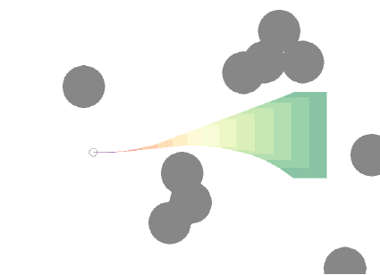

PLANNING IN UNCERTAIN MDPs: Robust-adaptive control of linear systems
Odalric-Ambrym Maillard
HORIBA
April 22, 2025

Roadmap
A study of the application article
"Robust-Adaptive Control of Linear Systems:
beyond Quadratic Costs",
by Leurent, E., Efimov, D. and Maillard, O-A.
in Neural Information Processing Systems, 2020.
- Robust control
- Linear systems
- Parameter estimation
- State prediction
- Robust planning
- Examples
Robust-Adaptive Control of Linear Systems: beyond Quadratic Costs
High level overview
Three main procedures:
Model Estimation: Using observed data to build aconfidence region for the unknown parameters of the dynamics.Interval Prediction: Using this confidence region to predict therange of possible future states.Robust Control: Usingtree-based planning with a pessimistic reward to find control actions that maximize the worst-case outcome.
Robust Adaptive Control Framework
- Core Challenge: Safe control with \(\theta \in \Theta\) unknown
-
Solution Pillars:
- 1. Confidence regions for dynamics
- 2. Stable interval predictions
- 3. Minimax planning
Linear System Dynamics
The continuous-time linear system dynamics are defined as: $$\dot{x}(t)=A({\color{red}\theta})x(t)+Bu(t)+D{\color{red}\omega(t)},\quad t\ge0$$
Where:
- \(x(t) \in \mathbb{R}^p\) is the system state vector.
- \(u(t) \in \mathbb{R}^q\) is the control input.
- \(\omega(t) \in \mathbb{R}^r\) is the disturbance, assumed to be
bounded \(\omega(t) \in [\underline{\omega}, \overline{\omega}]\) - \(A(\theta) \in \mathbb{R}^{p \times p}\) is the state matrix, dependent on
unknown parameters \(\theta \in \Theta \subset \mathbb{R}^d\).
We consider \(A(\theta) = A + \sum \theta_i\Phi_i\) for known \((\Phi_i)_i\) matrices.
- \(B \in \mathbb{R}^{p \times q}\) and \(D \in \mathbb{R}^{p \times r}\) are known matrices.
The reward in state \(x\) is given by \(R(x)\), assumed known.
Generic overview of robust planning
say we build \(\cC_{N,\delta}\) such that \(\Pr(\theta \in \cC_{N,\delta}) \geq 1-\delta\)
Maximizing the Worst-Case Outcome
\( V^\text{robust}(u) = \inf\limits_{\omega(t) \in [\underline{\omega}, \overline{\omega}]} \inf\limits_{\theta \in \cC_{N,\delta}} \mathbb{E}\left[\sum\limits_{n=N+1}^\infty \gamma^n R(x_n)\right]\)
System Dynamics & Value of the Game
Linear Parameterized Model
\(\dot{x}(t) = \underbrace{Ax(t)}_{\text{Nominal}} + \underbrace{\sum_{i=1}^d \theta_i\phi_i x(t)}_{\text{Uncertainty}} + Bu(t) + D\omega(t) \)
Maximin Objective
\( \sup\limits_{u} \inf\limits_{\omega,\theta \in \mathcal{C}_N} \underbrace{\mathbb{E}\left[\sum \gamma^t R(x_t)\right]}_{\text{Value function}} \)
Nature's Play: Chooses worst-case \(\theta\) within confidence region \(\mathcal{C}_N\)
Our Strategy: Optimize controls assuming adversarial parameters
1] Uncertain state evolution
Idea: build an

2] Robust planning
Define
\(\underline{R}_n(u) = \min\limits_{x\in [\underline{x}_n(u),\overline{x}_n(u)]}R(x)\)
Then define
\(\hat V^{\text{robust}}(u) = \sum\limits_{n=N+1}^\infty \gamma^n \underline{R}_n(u)\)
The Robust predicted value is a pessimistic version of the Robust value, itself a pessimistic version of the Value:
\(\hat V^{\text{robust}}(u) \leq V^{\text{robust}}(u) \leq V(u)\)
There is
We can use OPD strategy !
Complete robust algorithm
Discrete actions for Continuous system
Hierarchical Control Structure
High-Level Actions (Discrete) ↓ Low-Level Controllers (Affine) ↓ System Dynamics
- Action Space: Finite set \( \mathcal{A} \)
- Controllers: \(u(t) = -K_ax(t) + u_a \)
- Planning: Tree search over action sequences
This structure balances
\(B_a(i)=\sum\limits_{n=0}^{h(i)-1}\gamma^n \underline{R}_n(u_a)+\frac{\gamma^{h(i)}}{1-\gamma}R_{\max}\)
Summary
Theoretical Guarantees
Suboptimality Decomposition
\(\underbrace{V^* - V^{\text{alg}}}_{\text{Total loss}} \leq \underbrace{\mathcal{O}(\gamma^K)}_{\text{Planning horizon}} + \underbrace{\mathcal{O}(e^{-\lambda N})}_{\text{Estimation error}} + \underbrace{\mathcal{O}(\sqrt{\ln(1/\delta)/N})}_{\text{Prediction error}} \)
Key Insights
- Geometric reduction with planning depth
- Exponential convergence in model estimation
- Statistical error decreases with samples